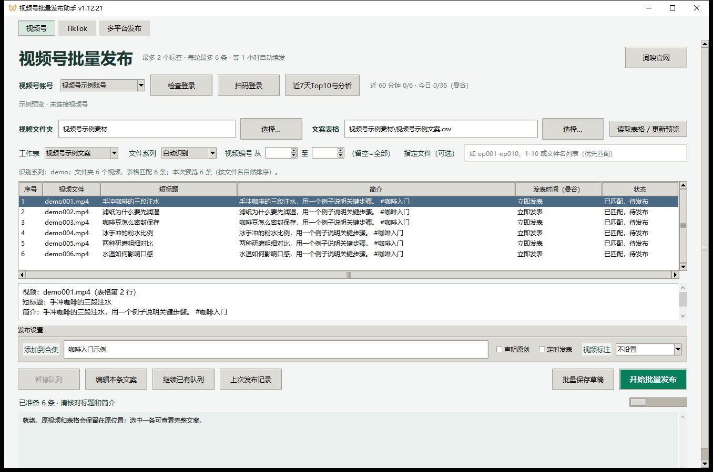
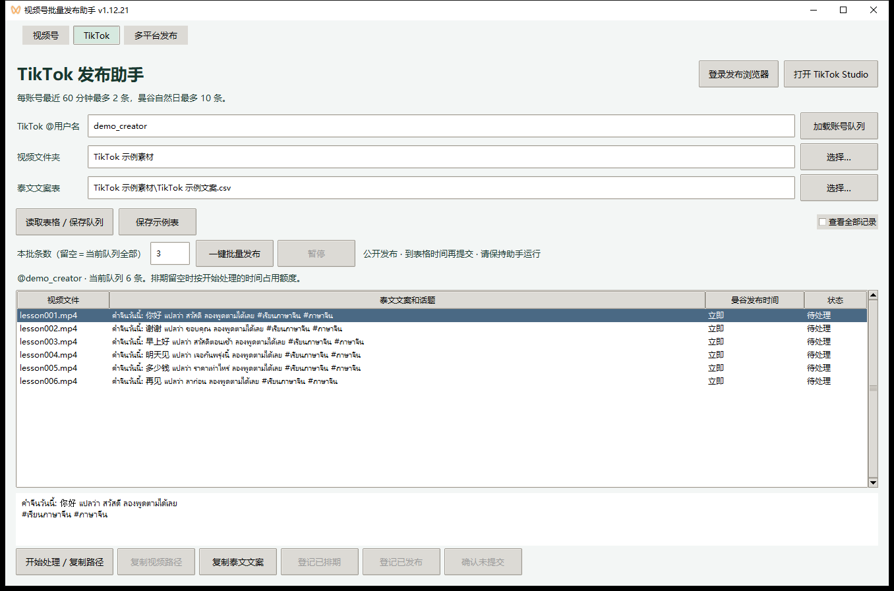
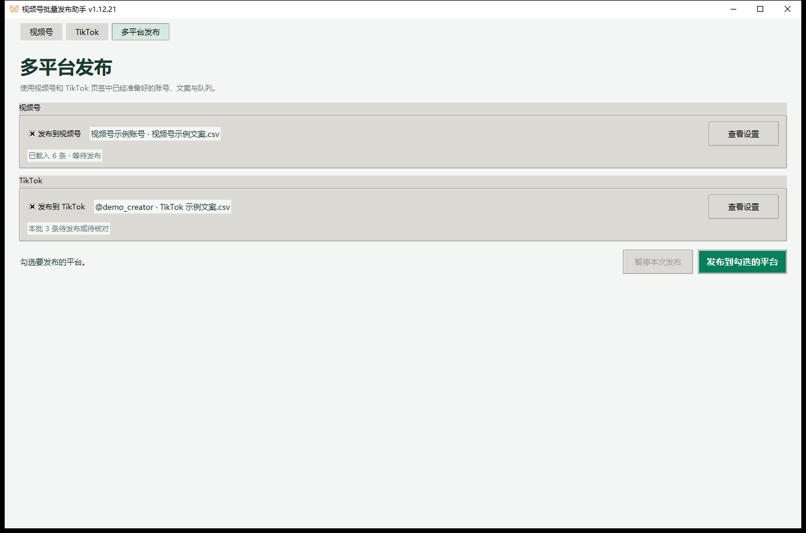
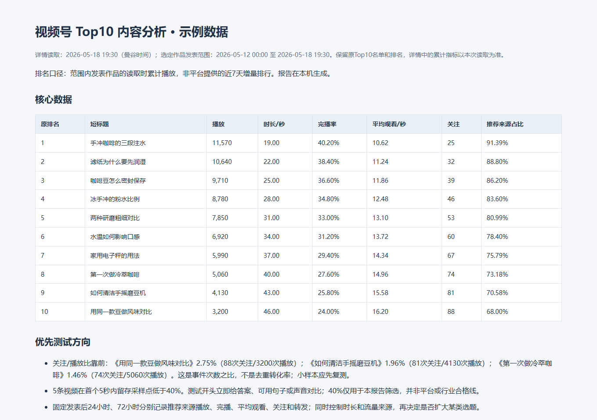

表格文案导入
按视频文件名匹配 Excel、CSV 或 TSV。短标题和简介分栏预览，可选择连续的文件编号。
免费开源 · Windows 10 / 11 x64
用 Excel 或 CSV 整理文案，批量上传、定时发表视频号作品，并核对后台结果。视频号和 TikTok 各自配置好后，到 多平台发布 勾选并启动两边的队列。
v1.12.21 · 内置 Python 和 Chromium。TikTok 发布需安装 Google Chrome。

按视频文件名匹配 Excel、CSV 或 TSV。短标题和简介分栏预览，可选择连续的文件编号。
最多两个标签并行上传，封面先就绪的作品优先提交。可立即发表、定时发表或保存草稿。
重新打开软件可继续已有队列。保留本地发布历史后，同一账号已核验的视频会自动跳过。
#话题。ep001-ep010 选中一段连续编号。作品间隔可选 1、3、5 分钟，首条时间使用曼谷时区并需提前超过 2 小时。批次的每小时、每日提交额度另行计算。
@用户名。可以在表格填写曼谷时间，助手会到点提交。队列按账号保存在电脑上，已登记的作品会跳过，提交结果以 Studio 后台核验为准。

两个平台可使用不同素材和文案。勾选两边时，各自沿用原设置并行发布。

查看最近 7 个曼谷自然日内发表的作品，按当前累计播放量选出前 10 条。报告展示后台能提供的完播、平均观看和播放来源等指标，方便回看选题。
查看 GitHub 项目说明 ↗